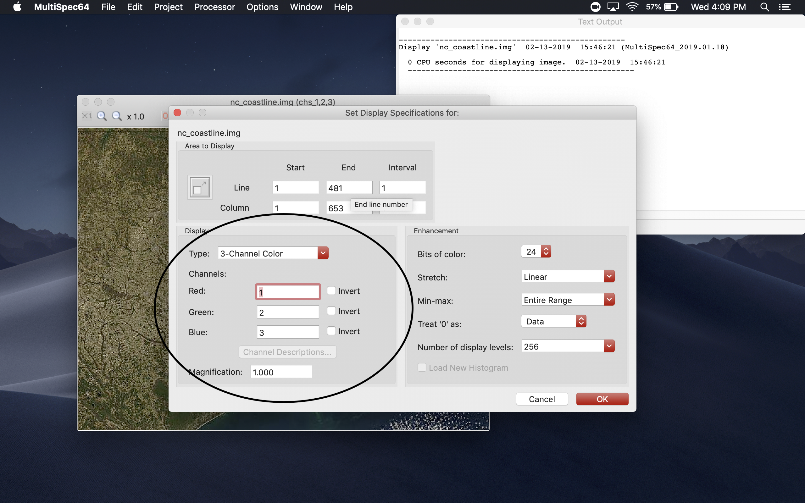
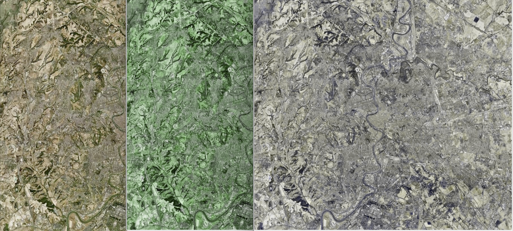
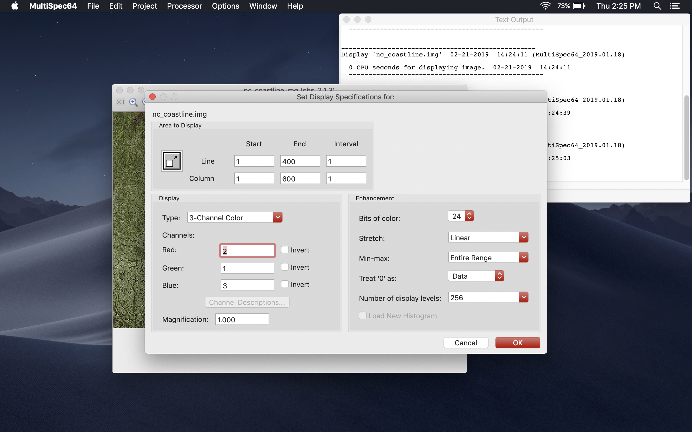

Resizing and Modifing an Image
Modifing an Image
Next we'll focus on modifing some of the display values of an image.
Begin opening the image from the previous tutorial. To download the image use this link.
Next from the "Processor" tab in the toolbar at the top of the screen click "Display Image".
This will open a new window. In this window we'll be focusing on the section labeled "Display".

This section is used to modify how MultiSpec reads the pixels within an image. This may be done to achieve better image quality or to better highlight data points in a satillite image.

We're going to begin by changing the red and green channels. Look for the input boxes labeled "red" and "green".
Change the red value to "2" and change the green value to "1". Observe the change in color.

Next we are going to invert one of the color channels. This will also in some situations make parts of an image easily distinguishable.
Check the green invert checkbox and click "Ok". Observe the changes in the image.


Continue to next tutorial.